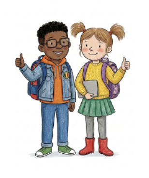

Sciences en immersion
Bienvenue dans ton espace de sciences
Sélectionne ta langue, puis ton année, puis le chapitre. Chaque chapitre ouvre une fenêtre de choix vers Vocabulary, Practice, Resources ou Explorations.

1. Choisis ta langue d'immersion
2. Choisis ton année
3. Choisis un chapitre
Les pages Vocabulary, Practice, Resources et Explorations sont déjà créées dans l'arborescence. Choisis un chapitre, puis sélectionne la section souhaitée dans la fenêtre qui s'ouvre.